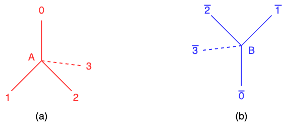

Protein folding is the physical process by which a polypeptide chain produces a three-dimensional structure. It involves primary structure, secondary structure, tertiary structure, and quaternary structure. The structure of a protein is crucial for its functions, as it determines how the protein interacts with other molecules in the cell.
Here, I explore the utilization of quantum algorithms for protein folding into tertiary structures. Protein folding involves predicting the three-dimensional structure of a protein from its amino acid sequence, with the goal of finding the conformation with the minimum energy. To address this challenge, I employ Variational Quantum Eigensolver (VQE) that can efficiently approximate the ground state energy of quantum systems. By leveraging VQE, I aim to advance our understanding of protein folding and contribute to the development of novel computational approaches in structural biology.
Due to the limited number of qubits available on current quantum computers, executing quantum protein folding becomes challenging for longer amino acid sequences. This limitation constrains the size and complexity of the protein structures that can be accurately modeled with quantum algorithms. As a result, while quantum computing holds promise for advancing protein folding research, overcoming hardware constrains remains a critical challenge that requires further exploration and innovation.
Simplifying protein folding on a diamond lattice provides a foundational framework to illustrate quantum approaches for studying protein folding. In this simplified model, proteins are represented as linear chains of amino acids arranged on a lattice resembling the crystalline structure of diamond. Each amino acid is positioned at a lattice site, and the connections between them mimic the bonds in the protein backbone. Importantly, the angle and distance of amino acids are constrained by the lattice structure, reflecting the geometric limitations imposed by the lattice geometric. It can be allowed to investigate quantum approaches for protein folding processes.
The quantum method described in the reference [1] encodes the directions of two adjacent amino acids on a lattice model as turns, which involves the relative orientation or angular displacement between the amino acids. In the simplified diamond model, the connections between lattice sites represent the bonds between adjacent amino acids in the protein chain. All of amino acids are positioned at either the sub-lattice A or B in the Figure 1 (a) and (b). Each sub-lattice contains beads representing and these beads have four turns: {0, 1, 2, 3} at the sub-lattice A or {\(\overline{0}, \overline{1}, \overline{2}, \overline{3}\)} at the sub-lattice B. These turns correspond to the relative orientations of the amino acids and define the angular displacement between them. Each lattice site or bead in the lattice structure is assigned to either sub-lattice A or B in an alternating manner. This arrangement ensures that the lattice structure maintains its periodicity and symmetry. Therefore, in the context of quantum protein folding, the objective is to predict the optimal configuration or conformation of a protein by determining the turns of all amino acids. It represents the minimum conformation energy, which is the most stable and favorable folded state of the protein. VQE is employed to find the optimal turn which has the minimum conformation energy. Note that the quantum protein folding is from the reference [1].
The objective is to find the optimal configuration which has the minimum conformation energy. It is important to encode the turn by qubits. In the denser encoding, each turn between amino acids is represented by two qubits.
For the sub-lattice A:
For the sub-lattice B:
[1] A.Robert, P.Barkoutsos, S.Woerner and I.Tavernelli, Resource-efficient quantum algorithm for protein folding, NPJ Quantum Information, 2021, https://doi.org/10.1038/s41534-021-00368-4
Email: tankzhang19@gmail.com
LinkedIn: linkedin.com/in/zhang-hongfeng-176122270/